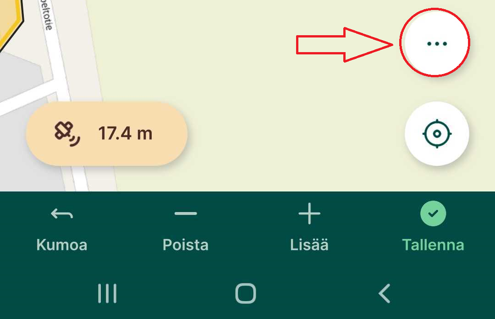
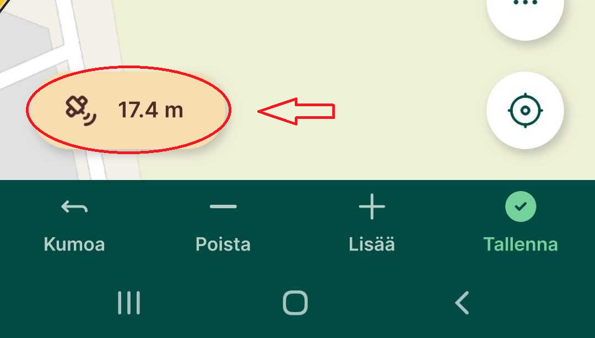
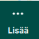
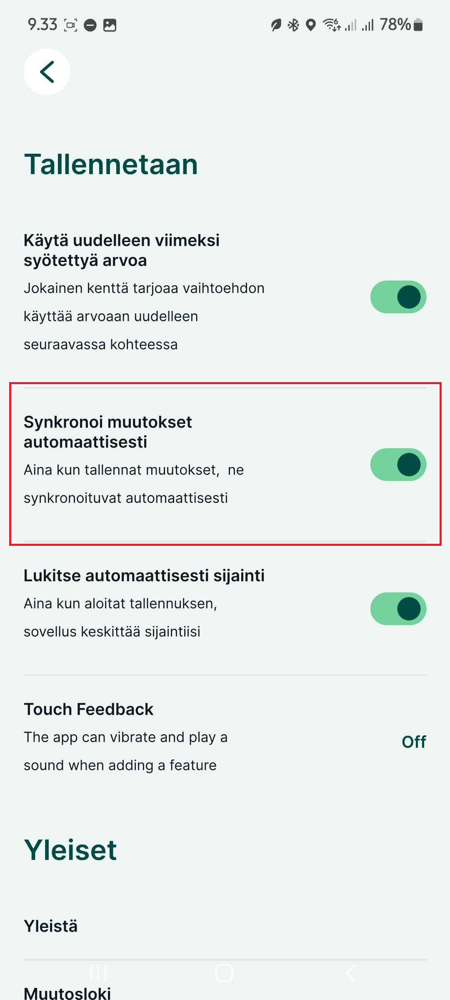

Muut ominaisuudet
Kohteiden muokkaaminen ja poistaminen mobiilisovelluksessa
Mergin Maps -mobiilisovelluksella voit kenttätyössä myös muokata ja poistaa kohteita.
Kohteiden muokkaaminen
-
Napauta haluamaasi kohdetta kartalta tai valikkolistasta ja valitse Muokkaa -painike ja Muokkaa geometriaa -painike siirtääksesi pisteitä.
-
Kun valitset Muokkaa geometriaa kohteen solmupisteet korostuvat: niitä voi siirtää, poistaa tai muuttaa.
-
Tallenna muutokset.
Geometrian uudelleenpiirtäminen
-
Napauta haluamaasi kohdetta kartalta tai valikkolistasta ja valitse Muokkaa -painike muokataksesi ja Muokkaa geometriaa -painike.
-
Napauta Lisäasetukset-painiketta:

-
ja valitse Piirrä geometria uudelleen, tee uusi piirto ja tallenna.
Useiden kohteiden muokkaus
-
Valitse ensin yksi kohde kartalta ja valitse sen jälkeen Valitse lisää-toiminto.
-
Valitse muut muokattavat kohteet ja avaa attribuuttilomake. Anna uudet arvot ja tallenna -- kaikkien valittujen kohteiden attribuutit päivittyvät kerralla.
Kohteiden poistaminen
- Valitse kohde kartalta tai listasta, avaa muokkaa-lomake ja napauta Poista-painiketta. Vahvista poisto, niin kohde poistuu.
Viimeksi syötettyjen arvojen uudelleenkäyttö
Voit nopeuttaa kenttätyössä samankaltaisten kohteiden syöttämistä ottamalla käyttöön viimeksi käyttämiäsi attribuuttiarvoja -- nämä kopioituvat automaattisesti seuraavaan kohteeseen.
Miten otat ominaisuuden käyttöön:
-
Avaa valikko napauttamalla kolmea pistettä (⋯) ja siirry kohtaan Asetukset.
-
Ota käyttöön valinta "Viimeksi syötetyn arvon uudelleenkäyttö".
Miten se toimii käytännössä:
-
Kun olet ottanut ominaisuuden käyttöön, siirry takaisin karttanäkymään. Siinä vaiheessa, kun lisäät uuden kohteen, attribuuttilomakkeessa näkyy valintaruudut jokaisen kentän vieressä.
-
Valitse ne attribuutit (esim. laji tms.), joiden arvon haluat kopioida viimeksi tallennetusta kohteesta.
-
Tallennettuasi kohteen, valitsemasi attribuuteille kopioituu edellinen arvo automaattisesti seuraavalla kohteella, kun taas muut kentät jäävät tyhjiksi.
Pisteelle navigointi/merkintä kenttätyössä
Mergin Maps -sovellus ohjaa sinua valitsemaasi pisteeseen näyttämällä sekä suuntaan että etäisyyteen pisteestä -- mikä auttaa tarkassa kenttätyöskentelyssä.
Navigointi mobiilisovelluksessa
-
Avaa karttanäkymä ja valitse haluamasi piste.
-
Avaa ominaisuuslomake ja napauta Merkintä-painiketta.
-
Näet näkymän, jossa esitetään:
-
Etäisyys nykyisestä sijainnistasi kohdepisteeseen.
-
Viiva, joka yhdistää nykyisen sijaintisi ja pisteen.
Tämä on pitkän matkan navigointitila
-
-
Kun olet alle 1 metrin päässä pisteestä, näkymä vaihtuu automaattisesti lyhyen matkan navigointitilaan.
-
Täsmällinen navigointi (alle 10 cm etäisyys) korostuu vihreällä, mikä auttaa tunnistamaan, että olet aivan kohdassa.
GPS-tarkkuus Mergin Maps -mobiilisovelluksessa
Mergin Maps -sovellus näyttää reaaliaikaisen GPS-tarkkuuden, joka vaikuttaa suoraan kenttätyön paikkatietojen laatuun. Tarkkuus näkyy kartan alareunassa ja siihen liittyy värikoodattu ympyrä, joka havainnollistaa sijainnin arvioitua virhemarginaalia.
Mistä näet GPS-tarkkuuden?
-
Tarkkuusnäyttö näkyy kartan vasemmassa alakulmassa.

-
Väri kertoo, onko tarkkuus asetetun raja-arvon sisällä (vihreä) vai ulkopuolella (oranssi).
-
Värikoodin raja-arvo määritetään sovelluksen GPS-asetuksissa. (Oikea alakulman

--> Asetukset).
Oletus on 10 metriä. -
Napauta tarkkuusnäyttöä saadaksesi lisätietoja, kuten:
-
Horisontaalinen ja vertikaalinen tarkkuus (HDOP, VDOP)
-
Käytettävissä olevien satelliittien määrä
-
GPS-antennin korkeus (jos määritetty)
-
Viimeisin sijaintitieto
Miten parannan GPS-tarkkuutta?
-
-
Odota vakaata signaalia: Jos tarkkuus on heikko, odota hetki, että laite saa paremman signaalin.
-
Käytä ulkoista GPS-laitetta: Liitä laitteesi Bluetoothin kautta ulkoiseen GPS-vastaanottimeen saadaksesi tarkempia mittauksia.
-
Varmista esteetön taivasnäkyvyys: GPS-signaali heikkenee esteiden, kuten rakennusten tai tiheän puuston, takia.
💡 Vinkki
Jos haluat erittäin tarkan sijainnin, kannattaa käyttää ulkoista GPS-vastaanotinta, joka hyödyntää GPS-korjauksia.
Karttapiirrokset/luonnostelu
💡 HUOM!
Vaatii että projekti on ladattu QGIS-työpöytäohjelmistoon. Jos et ole tehnyt tätä vielä, noudata ohjeiden kohtaa: Projektin lataaminen tietokoneelle
Mergin Mapsin karttapiirros (Map Sketching) -ominaisuuden avulla käyttäjä voi piirtää vapaalla kädellä kartan päälle mobiilisovelluksessa. Piirroksia voi tehdä eri väreillä ja ne tallentuvat erilliseen kerrokseen, joka synkronoituu takaisin QGIS-projektiin. Ominaisuus sopii esimerkiksi kenttämuistiinpanojen, reittien tai huomioiden merkitsemiseen nopeasti ilman, että tarvitsee luoda varsinaisia kohteita tietokantaan.
Työkalun käyttöönotto
-
Avaa projekti QGIS-ohjelmassa.
-
Valitse ylävalikosta Projekti → Ominaisuudet.
-
Siirry Mergin Maps -välilehdelle.
-
Ota käyttöön Enable map sketching -valintaruutu. Halutessasi voit myös määrittää värit, joita mobiilisovelluksessa voi käyttää piirroksissa.
-
Tallenna muutokset. Projektiin luodaan uusi GeoPackage-tiedosto nimeltä map_sketches.gpkg, joka sisältää piirroskerroksen.
-
Synkronoi projekti Mergin Maps -palveluun.
Karttapiirrosominaisuuden käyttäminen mobiilisovelluksessa
-
Napsauta karttapiirroskuvaketta (kynä) vasemmassa alakulmassa.
-
Avautuu piirrosvalikko. Piirrä vapaalla kädellä tai styluksella.
-
Valitse yksi seitsemästä (oletusväriset) tai projektissa määritellyistä väreistä.
-
Käytä kumityökalua virheiden korjaamiseen ja Kumoa-painiketta viimeisen muutoksen perumiseen.
-
Sulje piirrosnäkymä esimerkiksi vihreällä X-painikkeella.
Pituuden ja pinta-alan mittaaminen mobiilisovelluksessa
Viivan pituuden mittaus
-
Napauta näytön alareunassa olevaa Lisää-painiketta.
-
Valitse avautuvasta valikosta Mittaa-vaihtoehto.
-
Napauta Lisää piste -painiketta lisätäksesi pisteitä mittaamasi viivan varrelle.
-
Lisättyjen pisteiden välinen pituus näkyy mittaustyökalun paneelissa.
-
Nykyinen pituus näkyy ristihiiren osoittimen lähellä, kun siirrät sitä.
-
Jos haluat poistaa viimeisen lisätyn pisteen, napauta Kumoa-painiketta.
-
Kun olet valmis mittauksen kanssa, napauta Valmis-painiketta.
Pinta-alan mittaus
-
Napauta Lisää piste -painiketta lisätäksesi pisteitä haluamasi alueen kulmiin.
-
Kun siirrät ristihiiren osoittimen ensimmäisen pisteen lähelle, näet Sulje alue -vaihtoehdon.
-
Napauta Sulje alue -painiketta sulkeaksesi alueen ja saadaksesi pinta-alan mittauksen.
-
Pinta-alan ja ympärysmitan arvot näkyvät mittaustyökalun paneelissa.
-
Napauta Toista-painiketta aloittaaksesi uuden mittauksen.
💡 HUOM!
Mitatut arvot eivät tallennu
Mergin Mapsin synkronointi mobiilisovelluksessa
Mergin Maps-sovelluksella voit varmistaa, että tekemäsi kenttätyön muutokset synkronoituvat projektisi pilveen -- joko manuaalisesti tai automaattisesti.
Perusedellytykset synkronointiin
-
Sinun täytyy olla kirjautunut Mergin Maps-tilillesi.
-
Laite tarvitsee verkkoyhteyden synkronointia varten.
-
Sinulla tulee olla projektiin kirjoitusoikeudet.
1. Manuaalinen synkronointi
-
Napauta karttanäkymässä olevaa Synkronoi-painiketta.
-
Kun synkronointi on valmis, painike lakkaa pyörimästä ja näytölle ilmestyy ilmoitus: Synkronoitu onnistuneesti.
-
Voit halutessasi tarkastella odottavia muutoksia napauttamalla Lisää → Paikalliset muutokset.

2. Automaattinen synkronointi
-
Siirry sovelluksen Asetuksiin ja ota käyttöön valinta Synkronoi muutokset automaattisesti

-
Tämän jälkeen Mergin Maps synkronoi tekemäsi muutokset (kuten kohteiden lisäykset tai muokkaukset) automaattisesti, kun muutoksia tapahtuu ja internet-yhteys on saatavilla.
-
Synkronoinnin eteneminen näkyy Synkronoi-painikkeen animaation kautta, ja onnistuneen synkronoinnin jälkeen ilmestyy ilmoitus "Synkronoitu onnistuneesti".
-
Jos internet-yhteys katkeaa synkronoinnin aikana, pysähtyy automaattinen synkronointi ja vaatii uuden yrityksen, kun yhteys palautuu.